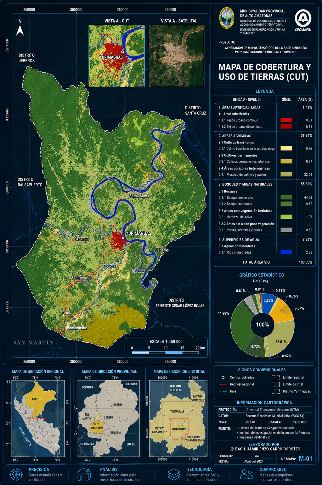
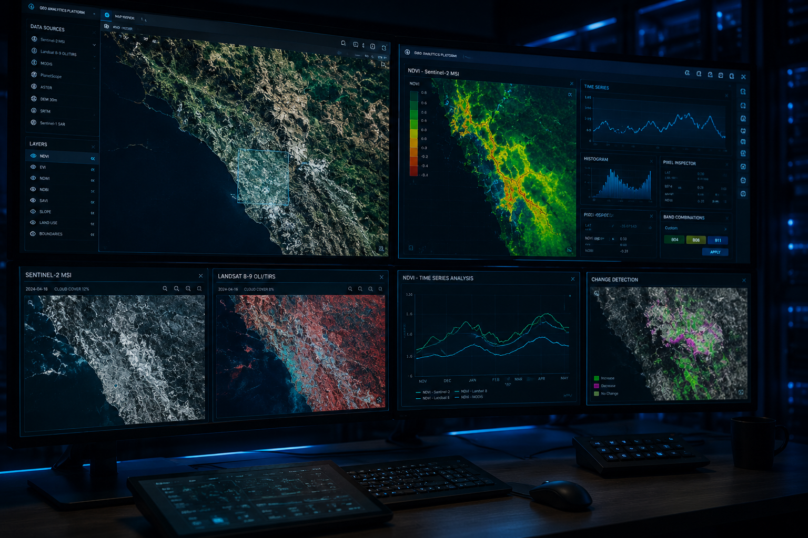

Aprende a producir mapas técnicos, manejar capas vectoriales y raster, y entregar salidas listas para informe. Curso práctico de 6 semanas con proyecto final guiado.

Caso real · Cartografía profesional QGIS · uso de suelo · EPSG:32719No es teoría: aprenderás a procesar datos espaciales, integrar capas vectoriales y raster, y generar análisis que respondan preguntas concretas. Dónde, cuánto, cómo cambia.
Desde la instalación hasta la producción de mapas: organización de proyectos QGIS, fuentes de datos abiertos, plugins clave y exportación a salidas estandarizadas para entrega profesional.

6 módulos prácticos, cada uno con un ejercicio guiado y un mini-proyecto.
Interfaz, proyectos, sistemas de referencia, importación de datos vectoriales y raster.
Tablas de atributos, edición de geometrías, joins y consultas espaciales básicas.
Buffers, intersecciones, dissolve, clip, modelos gráficos y procesos batch.
Mosaicos, álgebra de bandas, clasificación supervisada introductoria, MDT y pendientes.
Composer / impresión, simbología avanzada, mapas temáticos y exportación a PDF.
Mapa técnico completo con datos reales. Entrega revisada por el instructor.
Los mapas no terminan en QGIS. Te enseñamos a producir cartografía que llega a faena, planta o estudio con la información que el equipo necesita: capas validadas, simbología clara y salidas listas para uso profesional.
Trayectoria académica y profesional en cartografía, ordenamiento territorial y sistemas de información geográfica.
Más de 10 años trabajando con QGIS en proyectos de ordenamiento territorial, evaluación ambiental y cartografía base. Ha dictado capacitaciones en universidades y consultoras del sector público y privado.
Elige la que mejor se ajuste a tu disponibilidad y a tu nivel.
Clases sincrónicas dos veces por semana, con grabaciones.
Mismo contenido grabado, ejercicios autoevaluables.
Capacitación adaptada para equipos técnicos.
Si no encuentras tu respuesta, escríbenos por WhatsApp.
No. Empezamos desde la interfaz. Es útil tener manejo básico de planillas y archivos.
Un equipo con 8 GB de RAM es suficiente para los ejercicios. Indicamos cómo instalar QGIS en Windows, macOS y Linux.
Sí. Si pierdes una sesión, puedes verla luego y hacer consultas en el foro.
Sí, al aprobar el proyecto final en la modalidad en vivo.
Sí. Indica los datos al momento de inscripción.
Completa el formulario y te confirmamos disponibilidad. También puedes escribirnos directo por WhatsApp.
Inscribirme por WhatsApp